User Guide
Welcome to this Helping Guide from Comixplain. Our intent with this guide is to help you better understand comics and how to create them.
English version (v.2) - PDF, 8 MB German version (v.1) - PDF, 3 MBOverview
Comixplain promotes student-centred teaching and learning. As students vary in their prior knowledge and preferences, we propose alternative didactic materials to cater to individual learning processes. We propose a storytellingbased strategy to engage students in learning complex scientific subjects through comics.
The effectiveness of comics in learning for both children and adults has been demonstrated in many studies. However, the medium has not yet been extensively explored in Western education for science, technology, engineering, and mathematics (STEM) topics. The power of comics in learning comes not only from their familiarity, but also from a unique combination of traits inherent to the medium itself: they offer an engaging narrative structure, similar to that found in learning videos, while maintaining the freedom of a 2D spatial layout, as seen in text, visualizations, and infographics. This means that readers can benefit from a friendly, linear presentation while continuously keeping an overview of the subject (as opposed to rewinding a video) and having full control over their reading speed. Such characteristics leverage cognitive load theory to provide a more accessible medium in which learners can consume content at their own pace and in small pieces through a combination of simple language and illustrations.
The goal of this project was not to demonstrate the superiority of comics as didactic material compared to traditional methods such as textbooks and slides, but to understand and study how comics can contribute to the learning process and how to facilitate the production and use of comics as didactic material in and out of the classroom. This guide will provide general instructions to help you understand how to implement comics in your own lectures and teaching activities and how to leverage the assets offered by Comixplain in this process. We explain our modular system and best practices to help you use and adapt our comics, as well as create new ones using the assets provided as Open Educational Resources in our repository.
Panels
Panels are the main structure of comics. They are the borders around the drawings. For Comixplain, we already have a base 3x3 grid that defines the shape and size of panels, but there are still a few design, storytelling, and general comic rules we should follow when placing them.
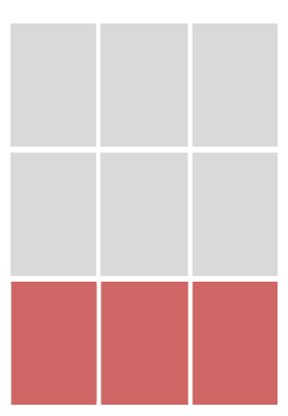
The grid provided with the Comixplain assets has three rows, each consisting of three squares. Each panel can be as small as one square, and as big as three in one row.
These rows in Comixplain are so-called strips.
Panel sizing in Comixplain according to the grid:
Three single panels with the same size
One single and a double-size panel, which spans over two singles. The order of those panels can be changed.
One triple-size panel for the full row.
Reading Flow
Western books are read from left to right and top to bottom.
We follow this rule in comics too. Therefore, when reading a comic, we start with the top panel in the left corner, then read the first row from left to right, and continue reading like we would read a book.
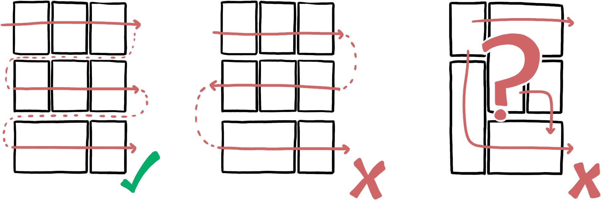
If we don't follow this rule by changing the reading direction or arranging the panels in a way that makes the reading order unclear, we confuse the readers and break their reading flow.
Panel Arrangement
Another element we have to keep in mind is how to break the story down into individual panels.
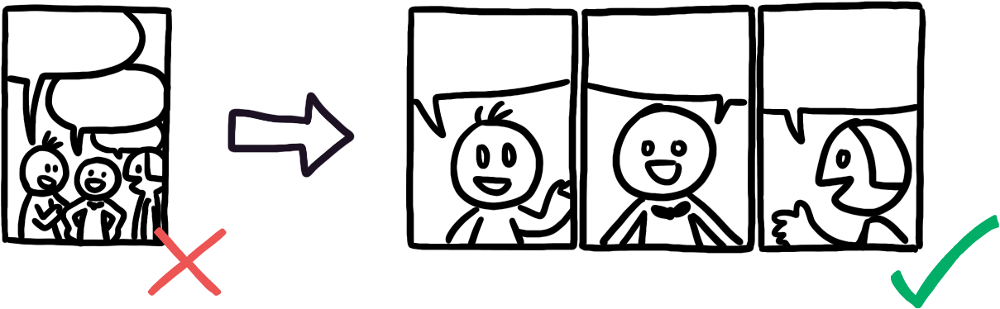
Try to avoid overcrowded panels, and rather stretch the dialogue across multiple single panels. Then again, don't overdo it with too many single panels, try to achieve a pacing that feels natural to you.
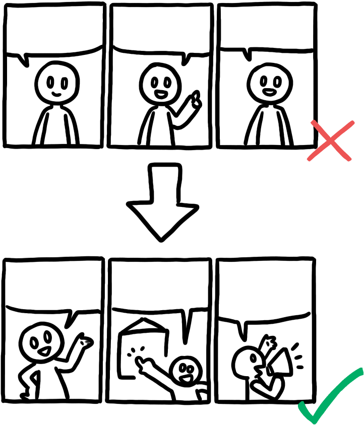
If you want to put more variation and life into the comic, try varying the poses of the characters.
The panel arrangement should be applied logically over multiple pages.
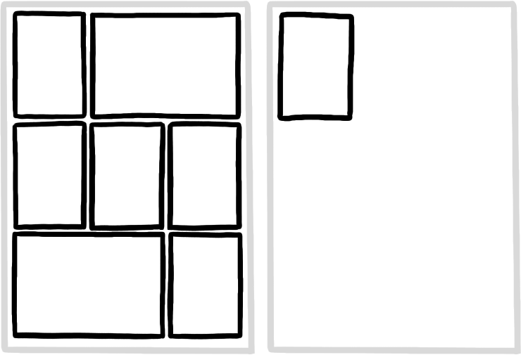
Try not to have just one small panel on a single page. The panel will seem out of place.
Do this instead:
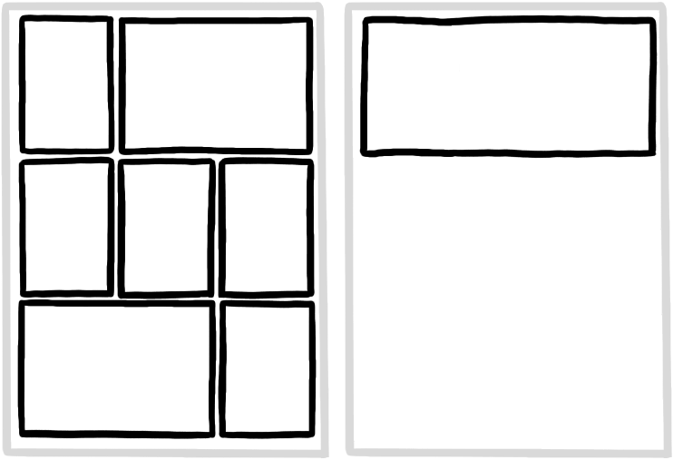
One full row panel
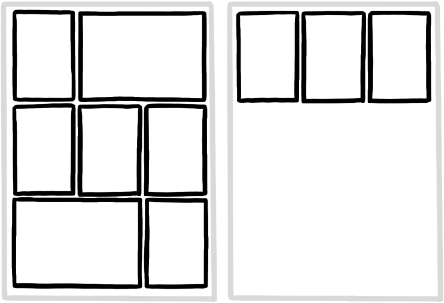
Lengthen the story to fill the row with more single panels, or a single and a double-sized panel.
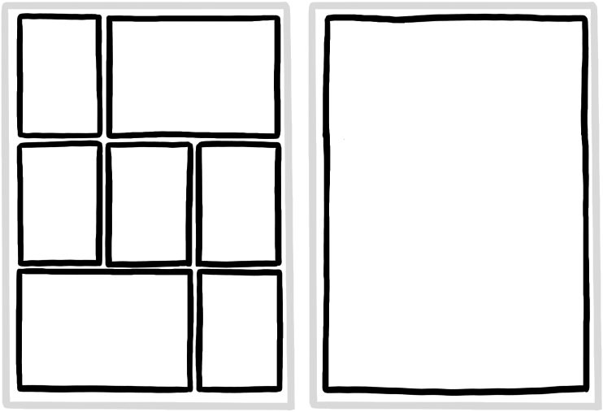
A full-page panel. Though this makes only sense if you want to end the comic with an exercise and add an annotation space for the readers.
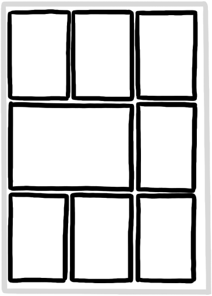
Rearrange panels and scripting to downsize your comic, and avoid using another page.
Seperation through panels
Just as we try not to have single panels on pages or to fill out rows, we want to keep separate themes, concepts, or topics in a comic together and apply shifts into other themes logically.
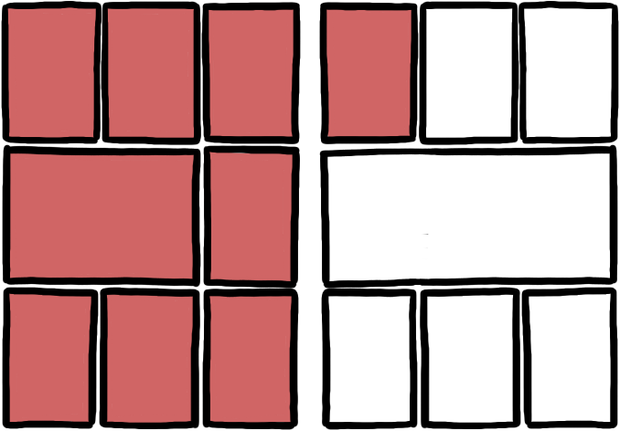
If one theme bleeds into another…
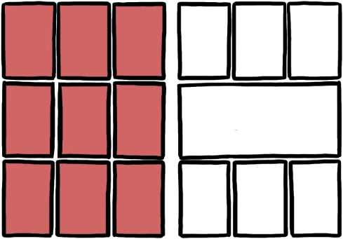
…make the change between the pages and start with the new topic on the fresh page
…use the full row of panels for the first topic (singles, doubles or whole row panel)
Example
In the Comixplain comic "Mathematical Thinking", there are two different themes of the topic in the story: 1)Notation; and 2)Evaluation.
In the initial sketch, those two topics overlapped, and even if they are part of the same theme, they were two different components of the mathematical thinking explanation. Therefore, we rearranged the panels and text to better differentiate between the two.
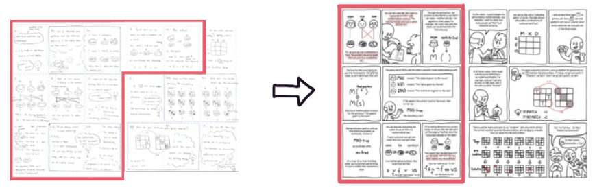
Speech Bubbles
For dialogues in comics, we use so-called speech bubbles. There are many different types and styles of speech bubbles. The most well-known examples are:
Normal Speech
These bubbles contain conversations or monologues that are spoken in a normal voice volume.
Thoughts
These contain thoughts of characters that are not spoken and are a tool to show the inner thoughts of characters to the reader.
Shouting
It includes any form of louder sounds. Can be happy, sorrowful, angry, surprised, and other versions of shouting. It just means that it is louder than normal.
For Comixplain, we mostly use variations of the normal speech bubble. In this helping guide, we will show you how to use the speech assets provided to you in PowerPoint, and some additional general rules for usage and layout of speech bubbles in comics.
These are the three used versions of normal speech bubbles in Comixplain:
Full Bubble
Half Bubble (on top of panels)
Boxes on top of panels for captions or narrations
Comixplain Assets
These are the speech bubble assets we provide in the Comixplain catalog. Here, we will tell you how to use them in PowerPoint after importing them into your presentation.
First, always make sure that speech bubbles are under the panel layer, but above the drawings layer (see more in the layering chapter of this helping guide).
Full Bubble
You can place these easily on the comic. They come with a white background so they can hide the artwork behind them, making lettering on them easy. Just make sure that the little triangle points to the person speaking the text in the speech bubble.
Half Bubble and Caption Boxes
The former are used for speech, while the boxes can have any written text, like narrations, thoughts, and mentions of time and space, on them. They are often used if a character is explaining or recounting something, and you see the talked-about topic instead of the character. Or if you want to explain the setting of the story, you can write the date or place in this box.
These two versions of asset bubbles have an open top border and are meant to be placed at the top of the panel. Because of the open top, you can move them freely from the top to the bottom and create a box that way. Because of this flexible use of the height of the boxes, only a small part of the Bubbles have a white background, so if you want to make them bigger, but there is artwork behind them that does not get hidden by the white background, you will need the help of creating white rectangles between the bubbles and the artwork.
Speech Bubble Rules
Some basic speech bubble rules:
1) Reading Flow
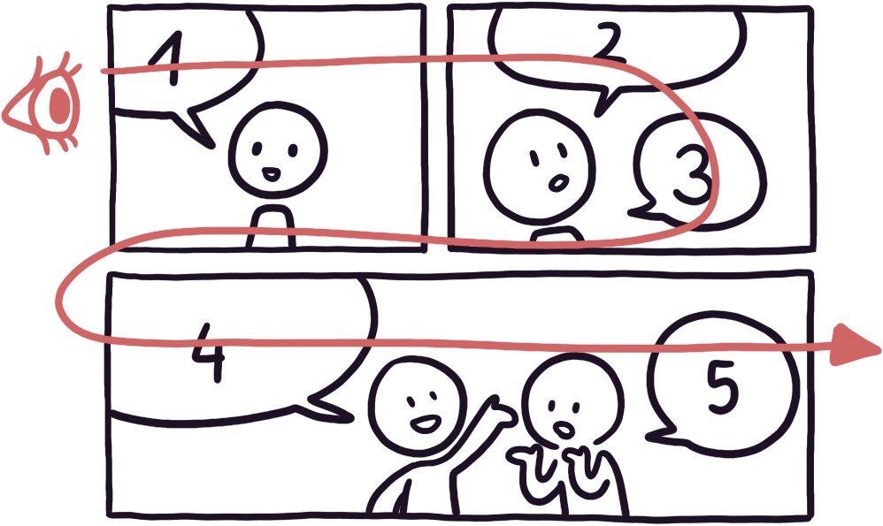
Just as with panels, we read speech bubbles from left to right, top to bottom, in the Western world. Therefore, we must arrange our speech bubbles following that rule. Reading starts in the top left corner, going from there towards the right, always reading the closest bubble.
This example comic would be read the following way:
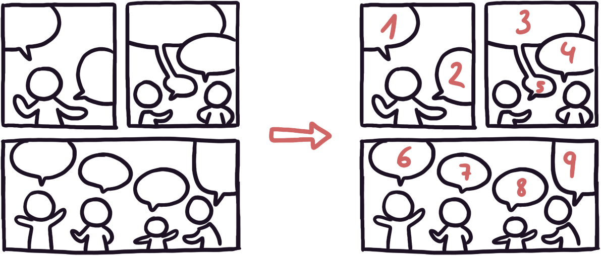
But if we want to read the bubbles how they are numbered in the colored version, we will need to rearrange the bubbles or the panel layout:
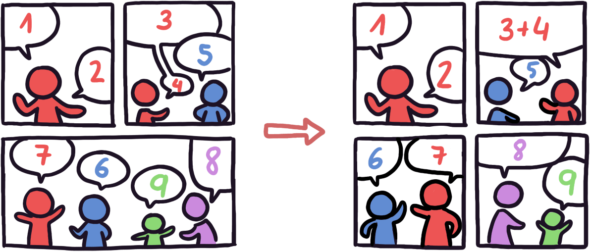
Write a script of the comic first, then draw an initial and very basic sketch (can be crude), then show it to other people to get their opinion on whether the comic is understandable.
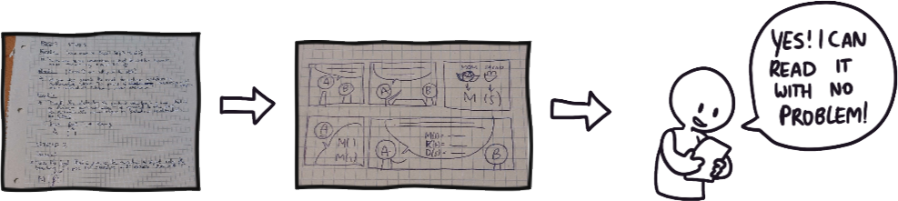
2) Do not cross speech bubbles over each other.
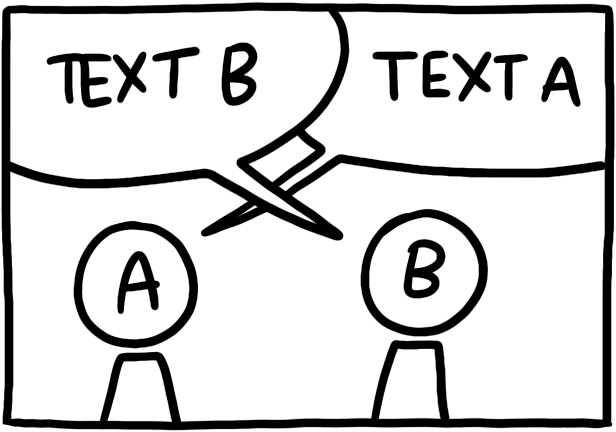
Since our reading direction is from left to right, we first read the bubble with "Text B". But, since our "artwork reading" is also from left to right, we associate the bubble with Person A instead of Person B. Because there are two speech bubbles, we tend to stick each of those to the closest character. Therefore, if the bubbles are crossed, it will throw off the readers.
Instead, do one of the following versions:
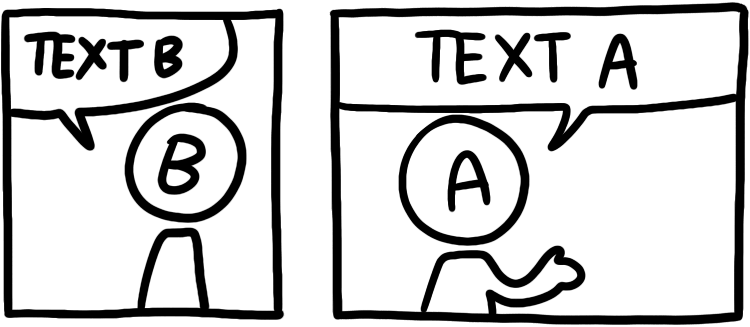
Split the one panel into two. This way each bubble has it's own panel and the reading order is clear.
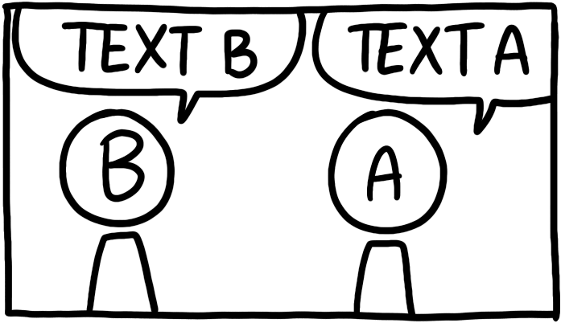
Change the position of A and B. Just be mindful of too many position jumps. If you do this too often, it could confuse the reader with how often the camera angle is moved.
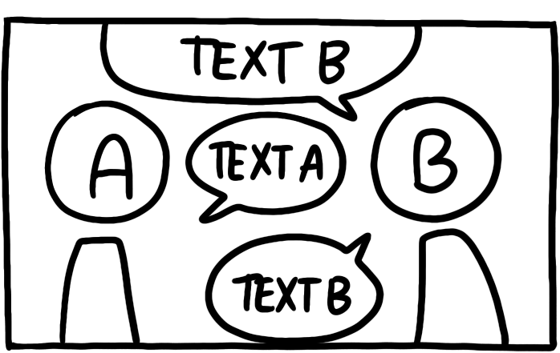
Change the reading direction from up to down. This only makes sense if you can change the script so that characters are talking in short sentences and alternating between each other. This version may also clutter the panel, so be mindful of its use.
3) Too much text in one speech bubble.
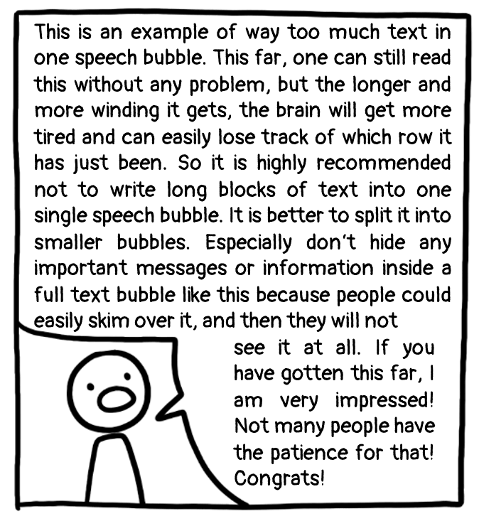
If there is too much text and information in one single speech bubble, people will often just skim over it and not read it properly or at all. Imagine a really long text in a book that spans over two pages without any paragraphs or breaks after some sentences. Tiring to read, isn't it?
Better split that text into more panels:
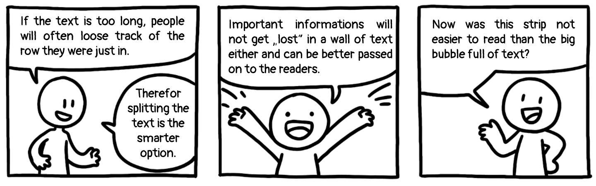
But at the same time, do not overdo stretching your text! You can lose your readers by dragging out your writing too.
If something can be said in just one or two panels without any reading problem, do not extend it unnecessarily just to get your comic longer.
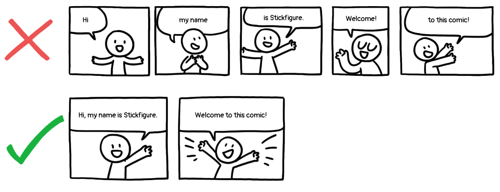
Ready-to-use comics
As part of the Comixplain project, a handful of comics covering different STEM topics have been produced by our team. These comics are available for free in our repository.
The provided comics cover the following topics:
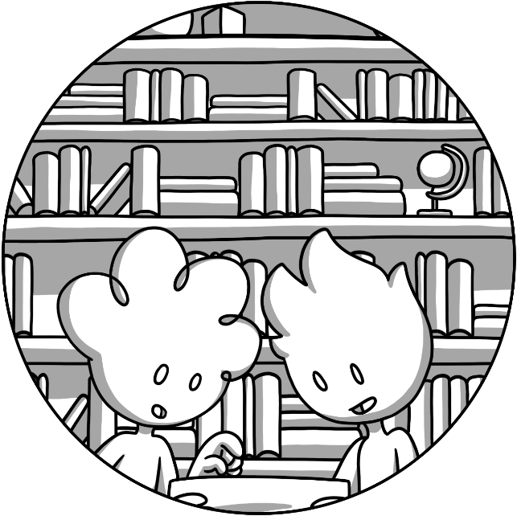
Attribute Types:
A comic explaining different types of data attributes or variables, a foundational topic in many STEM disciplines, including data science, statistics, and empirical research.
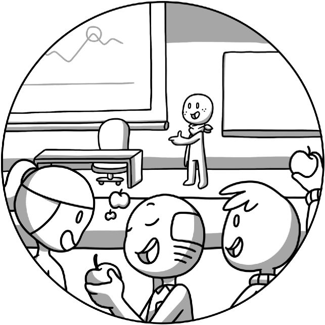
Central Tendency:
It explains data distributions and measures of central tendency, including the mean, mode, and median. Concepts that are fundamental in statistics, data science, and empirical research.
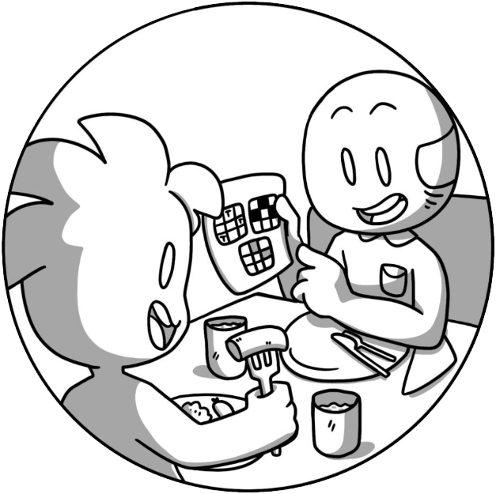
Mathematical Thinking
It explains propositional logic and fundamental concepts of mathematical reasoning, which are relevant to mathematics, computer science, programming, and formal reasoning.
Primitive Datatypes:
A comic explaining primitive data types in programming, such as integers, floating-point numbers, characters, and Boolean values.
Each prepared comic is translated into different languages. The ready-to-use comics can be downloaded as PDF files.
For each comic, additional assets are provided, which include the image files used in the corresponding comic book and editable PowerPoint files. The latter option gives you the freedom to adapt the comic.
For each comic, one or more derivatives may be provided, such as variations created by the community and published in our repository.
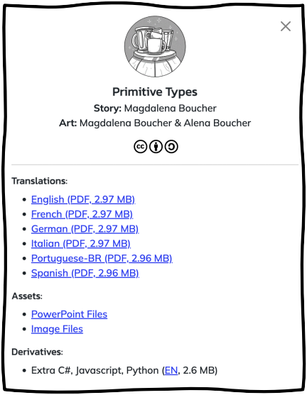
Catalog
The Comixplain catalog can be used to search for specific assets to use in your own comic.
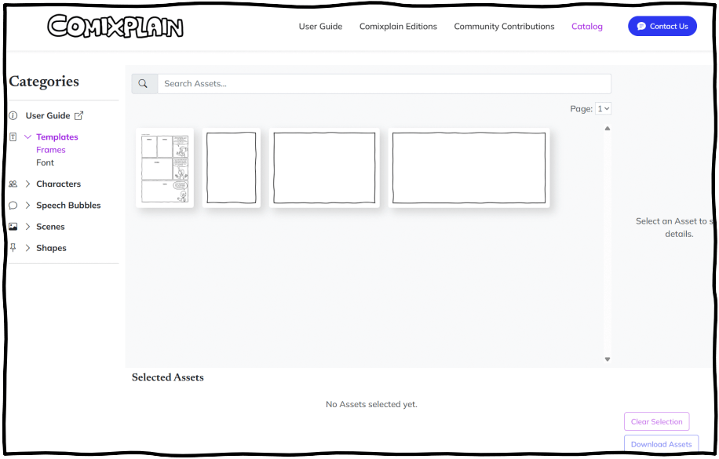
When you open the catalog, the first assets presented are the comic frames and the Comixplain PowerPoint template.
Categories
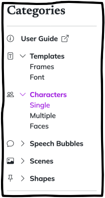
On the left side, you can see the different categories of assets available in the repository. By clicking on each category, you can see all the assets in that specific category.
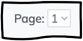
Twenty assets are shown per page, but you can navigate through the different pages using the pagination component.
Search and Filter
If you are looking for a specific asset, you can use keywords in the search bar. For example, if you want to have a character with a joyful expression, you may type "happy" in the search bar.
When opening a specific category, you will see filter tags appearing beneath the search bar. By clicking on them, you can filter the number of image assets in one category. You can select multiple filters. To deselect a filter, you just need to click on it again.
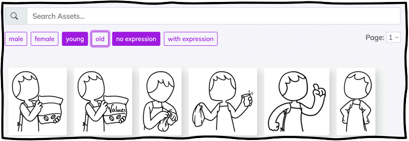
Asset Details
When you click on an asset, you will see details on the right side of the catalog page, namely:
Keywords:
Here you can see which tags this asset has. If you search for one of these tags, this asset will also appear.
Created by:
This tells you who created this asset.
File location:
All the assets can be found on our GitHub repository. The link here leads to this exact asset.
Rights:
By clicking on the logo, you will be led to the terms of use.
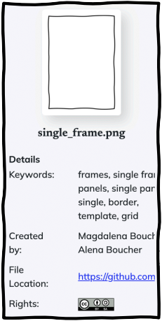
Select Assets and Download
By clicking on an asset, you add it to your Selected Assets. Every selected asset will get a purple outline to show in the gallery, which indicates that the image has already been selected. To deselect an asset, you can click on it again in the gallery or in your Selected Assets. By clicking the button "Clear Selection", all selected assets will be deselected.
You can add assets from different categories to your Selected Assets, and there is no limit to how many assets you can select at once. After you have selected all the assets you need, you just need to click on the button "Download Assets" and then you can save them locally.
Once you download the assets you need, you can use them in your presentations, your own comics, your Word files, or any other program you use for your educational purposes. The material can be used for free and distributed as you like, as long as the proper rights are given.
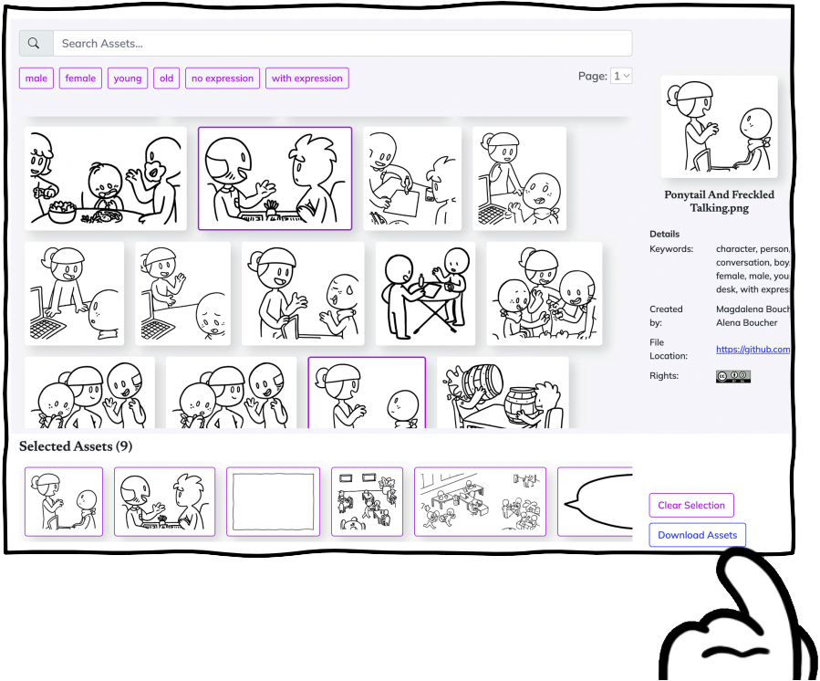
Repository
All of our content that you find in the catalog can also be downloaded directly from our GitHub repository.
When you open the link, you will end up on this landing page:
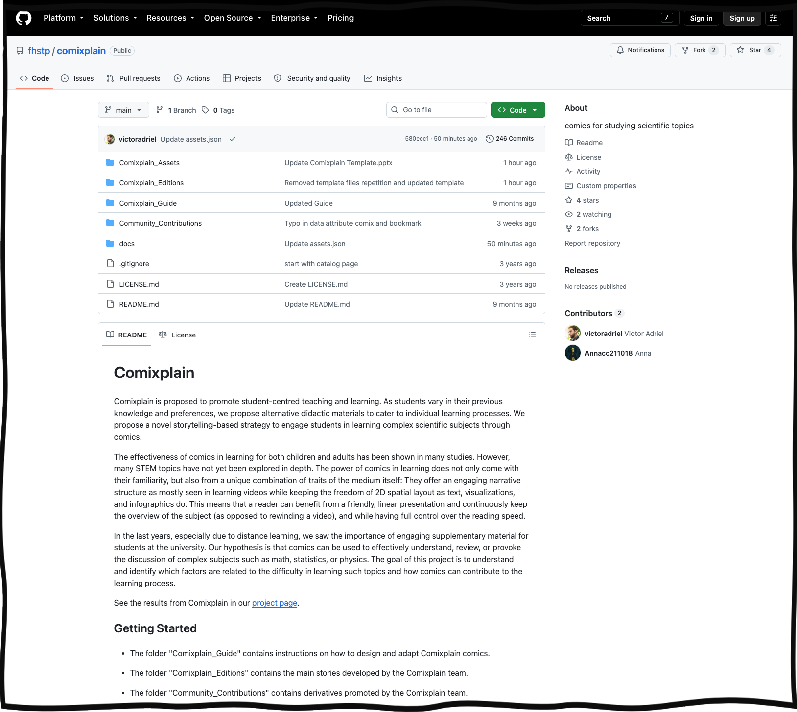
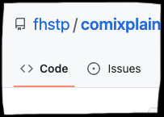
The tab "Code" is the landing page where you find the assets.
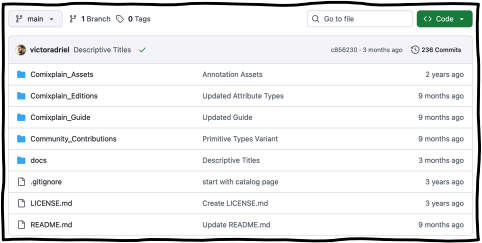
In these folders, you will find the files you need.
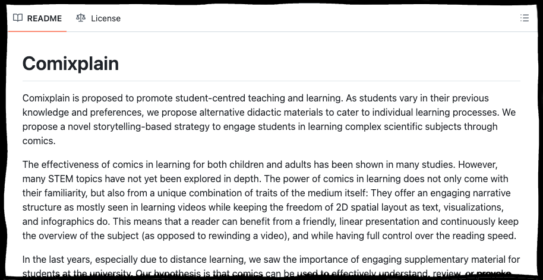
Here you can find informations about the repository.
The filesystem in the repository
If you have never used GitHub before, the repository may look confusing. GitHub is a platform for storing and managing projects, especially code. It tracks changes, supports version control, and helps teams collaborate. While some of these features are less relevant to our assets, GitHub helps us keep the materials up to date and publicly available.
For now, we will focus only on the parts you need to create your own Comixplain comics.
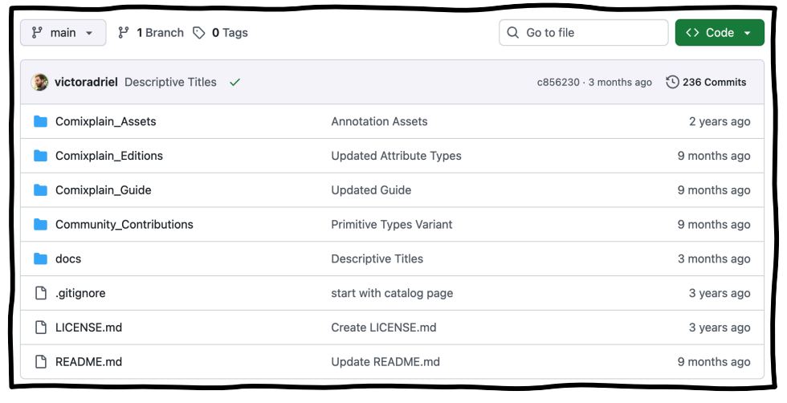
These are the folders and files in our repository:
Comixplain_Assets: Here you will find all the assets that you can use.
Comixplain_Editions: Here you will find all the assets that you can use.
Comixplain_Guide: Here you will find all the assets that you can use.
Comixplain_Contribution: Here you will find all the assets that you can use.
Finally, docs and .gitignore contain files and settings needed for GitHub and the Comixplain website, so you can ignore them. Same for the README file, which contains the information displayed on the repository's main page, and the LICENSE file that provides information about the project's license.
Viewing a file
When you click on a file instead of a folder, it opens with a preview. This allows you to read the provided comics directly in the repository or see what each asset looks like.
Some files, such as PowerPoint files, cannot be viewed online. These need to be downloaded and opened in the appropriate program.
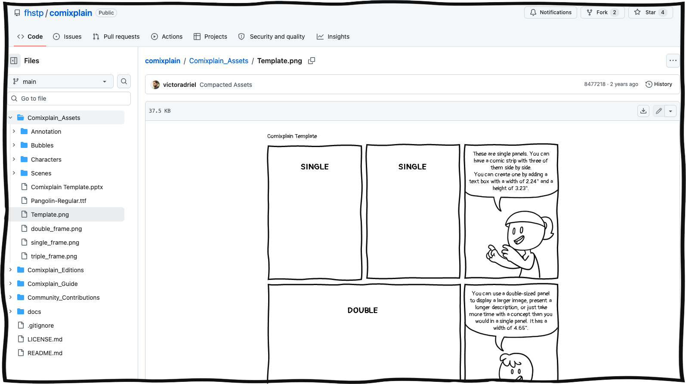
Downloading a file
To download a single file from the repository, click the "Download raw file" button while viewing the file. A window will open where you can choose where to save it on your computer.
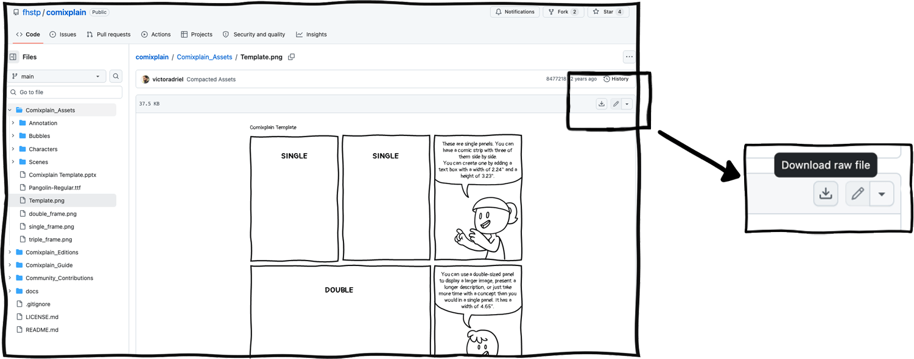
The Comixplain website provides a simple interface for accessing all available assets, so you do not need to navigate GitHub directly.
If you create or adapt materials and would like to contribute them to the repository, we recommend sending them to us by email rather than submitting a GitHub pull request. This allows us to better review, organize, and integrate community contributions into the repository.
Powerpoint and Layering
Now that you know how to get our assets, we will show you how to import these assets into PowerPoint and how to layer them.
Import all assets you need
As mentioned before, in the Comixplain repository or in the Catalog, you will find PowerPoint files with the basic 3x3 grid and folders with assets, such as speech bubbles, characters, and comics font. You can start from it.
Location for the Comixplain PowerPoint Template:
Repository Location: comixplain / Comixplain_Assets
Catalog: Templates / Frames
You can download the assets you need for your story and keep them in the same folder to help you with starting a new story.
What will you need now for a comic?
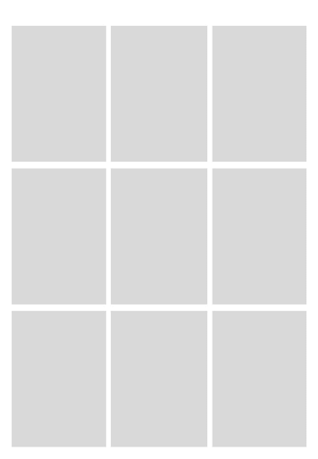
Comixplain Grid (for the overall structure)
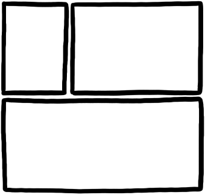
Borders for panels
Character assets
Background assets
Speech bubbles
Then, to put them all together, we will need:
But what is layering?
Just imagine you actually do the comic by hand, and all the assets are cut out of paper. Now, when you lay them in a random order over each other, some parts of the assets will be hidden by other assets.

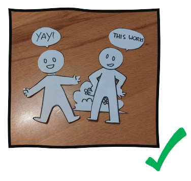
So we need to layer them in a order that makes sense.
Layering order used in PowerPoint for Comixplain:
Panel borders
Speech bubbles
Character assets
Background assets
Comixplain grid (This will be used only as a reference. Once you are done with the asset placement, you may delete this layer)
The text on the speech bubbles can be placed on top of all the layers.
Finally, for accessibility, make all non-textual elements decorative only by using the Alt Text feature in PowerPoint.
Adjust the final result
Before exporting your comic, take some time to adjust the small details that give it a professional appearance. Make sure that all assets are properly aligned and that layered elements are positioned consistently across the panels.
Do not forget to remove the placement grid from the background. In PowerPoint, select one or more slides, right-click, and choose Format Background. Then set the background to white.
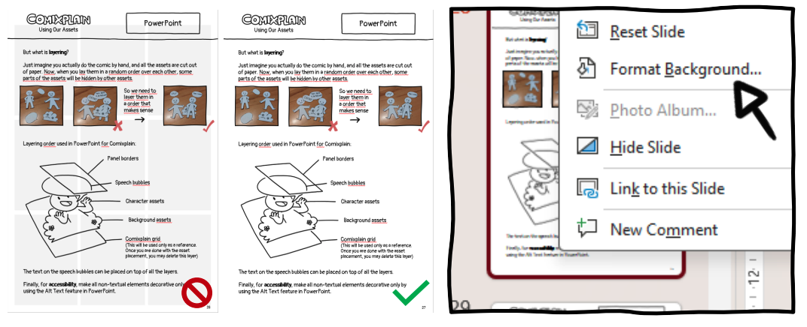
Finally, proofread all text carefully to remove typos and inconsistencies. We also recommend using PowerPoint’s Accessibility Review to check text and image contrast and verify the reading order of all elements. A correct reading order helps ensure that, once the comic is exported as a PDF, its content can be interpreted properly by screen readers.
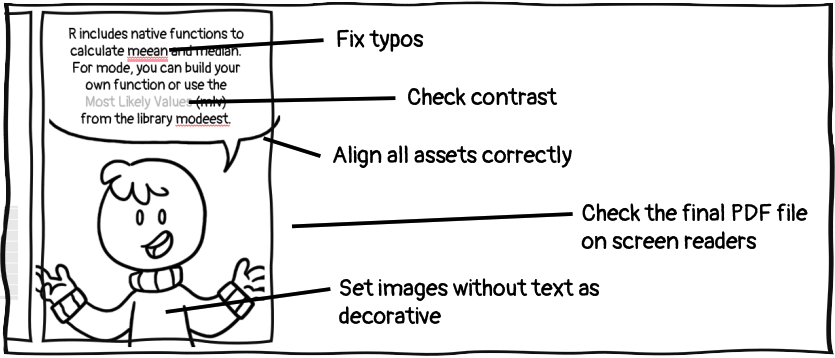
Comixcraft
Another way to create your own comics or short explanations is with the help of Comixcraft.
Comixcraft is an award-winning web comic editor created by the students A. Holla, A. Blasinger, A. Muneret, F. Gabillon, H. Wagner, J. Matsumura, and V. Koeck as a university project at the USTP. The website uses the asset library of Comixplain to help users easily create their own short stories and export them into comic strips directly from the web browser on your computer, tablet, or phone.
Layout
As a first step, you decide the layout of your comic and whether you want to make a single comic panel or a whole comic strip.
Comic Panel: This will be just one panel of a specific size. Can be used for just one explanatory image or a fun sticker.
Comic Strip: Here you can choose an option that features two or three panels to create a short story.
After choosing one of the layout options, you can start creating.
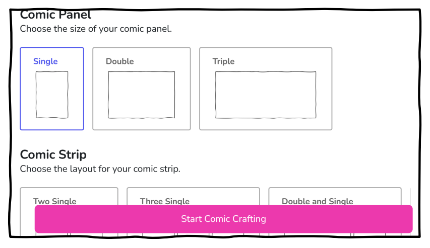
Crafting your comics
When you click the button "Start Comic Crafting", the editor will open. The panel(s) you will create are shown on the right side of the editor, while the assets are available directly in the editor to the left.
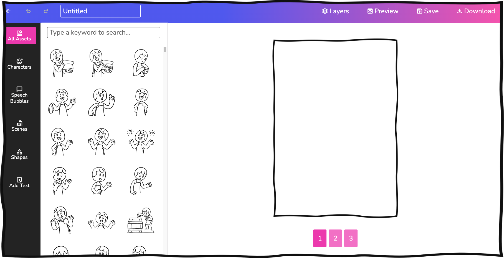
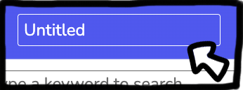
Name your project
After you are finished, you can download your comic here
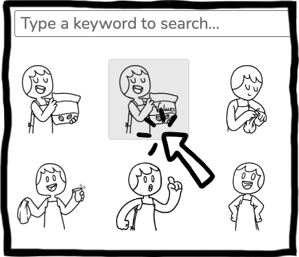
Click on the assets you want to add to the panel
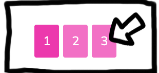
You can switch between panels here
Adding Assets and Layering
When you select one of the assets on the left, it will appear on your "canvas".
By clicking on the inserted asset, you can resize, delete, flip, and rotate the asset as needed. You can also change the layering order by moving it forward or backward.
After adding multiple assets, you can click on the Layers button in the top navigation bar to open an overview of all your assets. Here you can change the order of the assets so that they are correctly layered. You can change the order by either dragging and dropping the assets or clicking on the arrows on the side of the corresponding asset.
Remember: The background should be at the bottom and the speech bubbles with the text at the top. This way, the characters will not hide the speech bubbles.
Preview
At the top, you find the option to preview your project. This is especially useful when working with more than one panel, as here you can see what your full comic strip will look like.
Save
While working on a project, you can save it as a draft. This will ensure that no progress is lost.
Important: You can only have one draft at a time. So, if you want to save a new one, you will need to overwrite the old one.
Download
When you are finished with your comic or informative panel, you can easily download it by using the Download button. You can then save it as a PNG. It is also possible to share the finished project by clicking the Share button.
Variations
What else can you do with the materials offered by Comixplain? Whatever your imagination allows! The Comixplain assets are versatile, and you can create many different learning materials with them besides just comics.
Comic Strips
Instead of creating a full comic book or leaflet, you can create a short comic strip with 3–5 panels. These strips can present part of a story or a concise explanation and can be embedded in presentations as metaphors, visual summaries, or prompts for reflection and discussion. They can also be shared digitally or in print before a learning session to review prerequisite knowledge or afterwards to reinforce key content.
Bookmarks
Comic strips can also be adapted into printable handouts, such as bookmarks. These can serve as reminders of key content while also providing students with a useful souvenir that may strengthen their connection to the course.
Decorative Presentation Elements:
You can also enrich your presentations with Comixplain characters that provide additional information through speech bubbles. These elements can also be used on e-learning platforms as an engagement device, like using a character as a supportive avatar.
Stickers
Comixplain assets can also be turned into stickers, especially using Comixcraft to create quick one-panel designs. Short, informative messages can make them both fun and useful as reminders of key concepts.
Playful Learning Activities
Beyond standalone learning materials, Comixplain assets can be used in playful, constructivist activities. Students can create flashcards, games, presentations, or their own explanatory comics using the digital or printed assets.
For example, students can create a slide deck explaining a topic to their peers or use printed assets and stickers to build physical comics.
They can even use the Comixplain assets as stickers and draw on the blankfaced characters to create their own expressions and use other illustrations and assets to compose their own stories. This approach was used in the project Vis4Schools, where students created comics to explain data visualization topics using Comixplain stickers. That way, pupils can learn by teaching.
The Comic Construction Kit with printable stickers is also available in our repository:
There is no limit to your creativity!
Use the Comixplain assets in different ways to make learning more engaging, playful, and memorable.
Community
There have already been many community contributions to the Comixplain project, several of which have been introduced in this guide. These include the asset catalogue created by student Anna Blasinger to facilitate navigation through our assets, as well as Comixcraft, developed by several students to make it easier to create comics in a web browser using Comixplain assets.
Other contributions include adaptations and extensions of our ready-to-use comics, translations into additional languages, and entirely new web-based or printed comics covering different topics.
Whether it is a translation, a newly created comic, or another suitable contribution, we are always happy to hear from our community and make Comixplain-inspired contributions available in our repository.
If you would also like to join our community and support Comixplain by creating new educational content or proposing translations, adaptations, or corrections to the materials provided as Open Educational Resources, please get in touch with us. On our website, you can use the Contact Us button to find information on how to submit your contributions or share your experiences with educational comics.
Boucher, A., Boucher, M., Stoiber, C., Wu, H.-Y., & De-Jesus-Oliveira, V.-A. (2026). Comixplain Helping Guide (2nd ed., rev. August 2026). University of Applied Sciences St. Pölten (USTP). https://www.comixplain.cc.